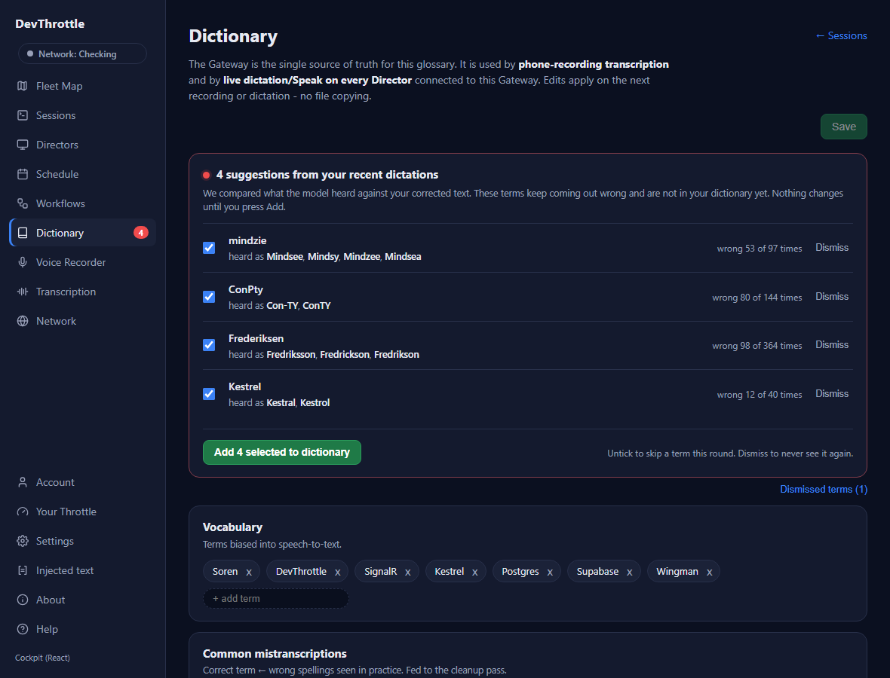
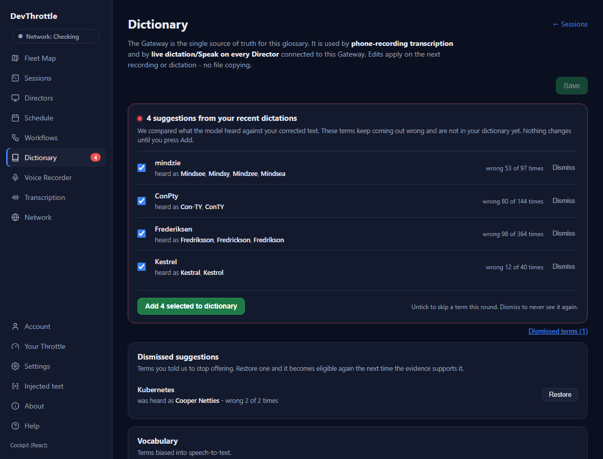

QA report - for review before merge
The Gateway keeps each tenant's dictation transcripts, mines the words the speech model keeps getting wrong that are not yet in the dictionary, and offers them as one-press dictionary additions - on the Dictionary page and over the API. This report is the evidence that the feature is built and works. It is written to be read before a pull request is opened: nothing here has been merged or deployed.
mission/dictionary-suggestions - 4 commits, 27 files, +5,109 lines. Not pushed.The storage foundation (per-tenant dictation_transcripts table) shipped separately in
PR #2093. This mission built everything that reads it and turns it into suggestions:
MistranscriptionMiner, in CcDirector.Core) - a
pure, static, language-agnostic function that clusters phonetically-near spellings across a tenant's raw
transcripts (single-linkage over the existing Jaro metric), takes the most-frequent spelling of a cluster
as the canonical term and the rest as its wrong spellings, applies strict evidence thresholds, and
excludes anything already in the glossary or dismissed. Same design as the shipped
FuzzyDictionaryMatcher: no I/O, no model, fully unit-testable.dictation_suggestion_dismissals table
(SQLite + Postgres migrations) holding each dismissed term with a snapshot of its evidence, so the
"Dismissed terms" screen can still explain a term after its transcripts age out./ingest/dictionary, sharing the exact
tenant-resolution idiom of the existing glossary routes (403 when no tenant resolves, never the Local
partition on hosted): read suggestions, read the count, apply, dismiss, list dismissed, restore.Every criterion from issue #2075, mapped to the test or artifact that proves it.
| Acceptance criterion (#2075) | Status | Proof |
|---|---|---|
| A per-tenant database record holds the raw and cleaned transcript, readable only by that tenant, subject to retention. | Met | Shipped in PR #2093 (dictation_transcripts, TranscriptStore). This mission reads it via TranscriptStore.RawTexts. |
| The server computes a ranked list of suggested terms with evidence, excluding terms already in the dictionary and terms dismissed. | Met | MistranscriptionMinerTests (14): ranking, evidence counts, exclusion of vocabulary / known mistranscriptions / dismissed terms, and quiet-when-thin. |
| The Dictionary nav item shows a red marker and count when suggestions are pending; the page lists them; select + Add writes them into the glossary; dismissing removes them and they are not offered again. | Met | DictionaryView.test.tsx (5) + the rendered screenshots below. Apply-writes-glossary proven by the HTTP end-to-end. |
| The suggestions can be read and applied over the API as well as the page. | Met | DictionarySuggestionsEndpointTests: a full HTTP read → apply → dismiss → restore, asserting Apply writes the term into Vocabulary and its wrong spellings into Common mistranscriptions. |
| No tenant can read another tenant's transcript text or suggestions at rest or through any route. | Met | Tenant-isolation tests in DictionarySuggestionDismissalStoreTests and DictionarySuggestionServiceTests (two tenants over one database). Every route resolves the caller's tenant and 403s when none resolves - the same boundary the existing /ingest routes use. |
| Self-hosted behaviour is unchanged. | Met | One write/read path, no IsHosted branch; self-host is the single Local tenant. The glossary path helper delegates to the exact path the editor routes already used. Existing recording/dictation tests unaffected (they call the same Map with defaults). |
34 new tests, all green.
| Suite | Tests | What it proves |
|---|---|---|
MistranscriptionMinerTests (Core) | 14 | The mining algorithm: clustering, canonical selection, evidence, all four exclusion/threshold rules, ranking, caps. |
DictionarySuggestionDismissalStoreTests (Gateway) | 8 | Dismiss/restore/list, evidence snapshot, normalized-term keying, and cross-tenant isolation. |
DictionarySuggestionServiceTests (Gateway) | 6 | Per-tenant compute, glossary + dismissal exclusion, cache TTL and invalidation. |
DictionarySuggestionsEndpointTests (Gateway) | 1 | Full HTTP read → apply (writes the real glossary file) → dismiss → list → restore. |
DictionaryView.test.tsx (Cockpit) | 5 | The panel renders evidence, Add calls the API, untick lowers the count, Dismiss moves a term to the dismissed list, and the zero state shows when empty. |
migrations has-pending-model-changes reports "No changes" on both SQLite and Postgres;
the Cockpit production build succeeds; the client-core and cockpit TypeScript
workspaces typecheck clean.
The real, unmodified Cockpit DictionaryView (production build) rendered against
live-shaped data. Evidence counts are the real figures mined by hand for issue #2075.


The approved mockup (docs/reviews/dictation-dictionary-suggestions-mockup-v2-2026-07-24.html)
draws five screens and closes with four open decisions. This mission implemented issue #2075 in full.
Two things it shows belong to a different issue and were left out on purpose:
Both are honest follow-ups, not gaps in #2075's acceptance. Flagging them here so the merge decision is made with the boundary visible.
dotnet test src/CcDirector.Core.Tests --filter "FullyQualifiedName~MistranscriptionMiner"dotnet test src/CcDirector.Gateway.Tests --filter "FullyQualifiedName~DictionarySuggestion"npx vitest run apps/cockpit/src/dictionary/DictionaryView.test.tsxdotnet ef migrations has-pending-model-changes --project src/CcDirector.Gateway --startup-project src/CcDirector.Gateway --context GatewayDbContextCC_GATEWAY_EF_PROVIDER=postgres dotnet ef migrations has-pending-model-changes --project src/CcDirector.Gateway.Migrations.Postgres --startup-project src/CcDirector.Gateway.Migrations.Postgres --context GatewayDbContextIf this report is accepted: open the pull request for
mission/dictionary-suggestions, land it on main, and deploy the hosted Gateway (a
new table means the Postgres migration applies on the warmed staging-slot boot before the swap). The Settings
privacy screen and the daily email (issue #2074) can follow as separate, smaller pull requests.